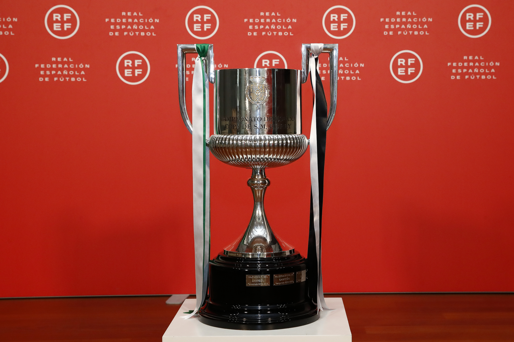
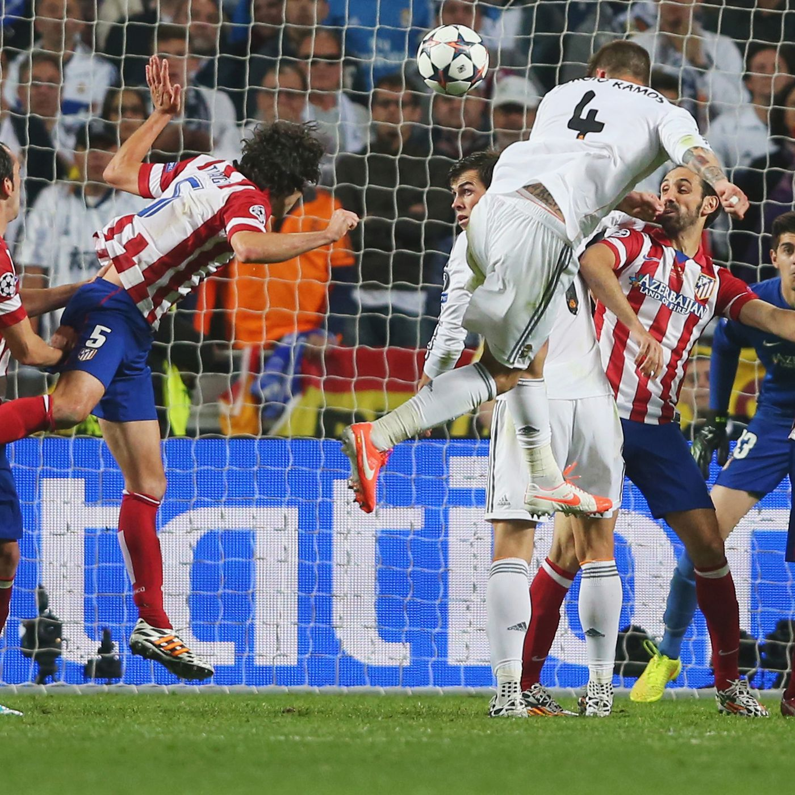

Champions League
14 titles
Most titles in Champions League history
La Liga
35 titles
Most titles in La Liga history

Copa Del Rey
20 titles
European Supercup
8 titles
Most titles in European Supercup history
FIFA Club World Cup
8 titles
Most titles in Club World Cup history

Spanish Super Cup
13 titles
14th Champions League Victory
A lot of Comebacks

La Decima moment 92:48
Sergio Ramos header in the final of Champions League
FIFA club of the century
The only club that has won it
Real Madrid during 1955-60
5 consecutive Champions League
El Classico
The biggest win ever in El Classico
Zidane goal in Final
A volley goal to secure 2-1 win against Bayern Leverkusen in final